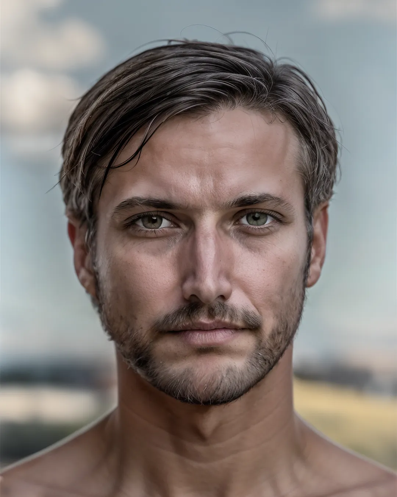
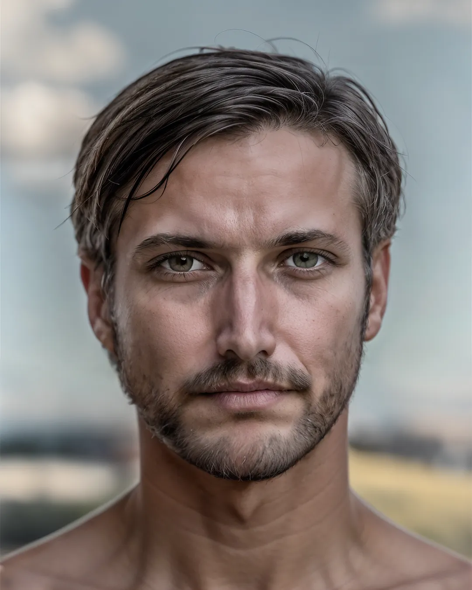
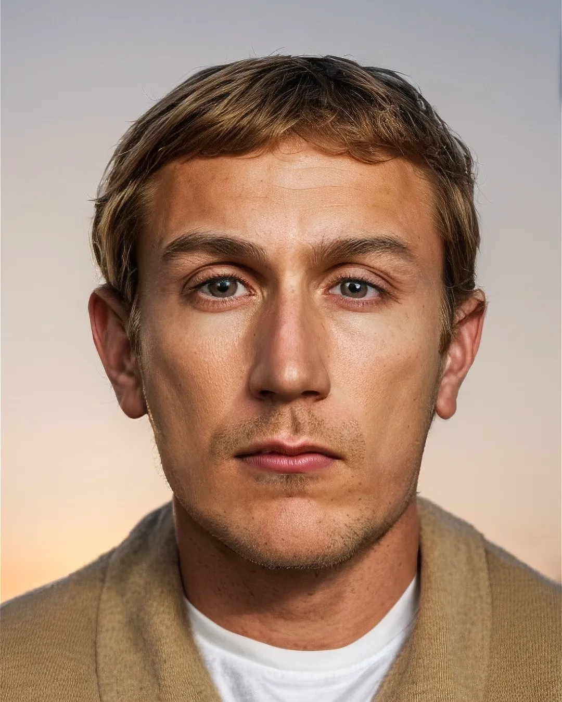
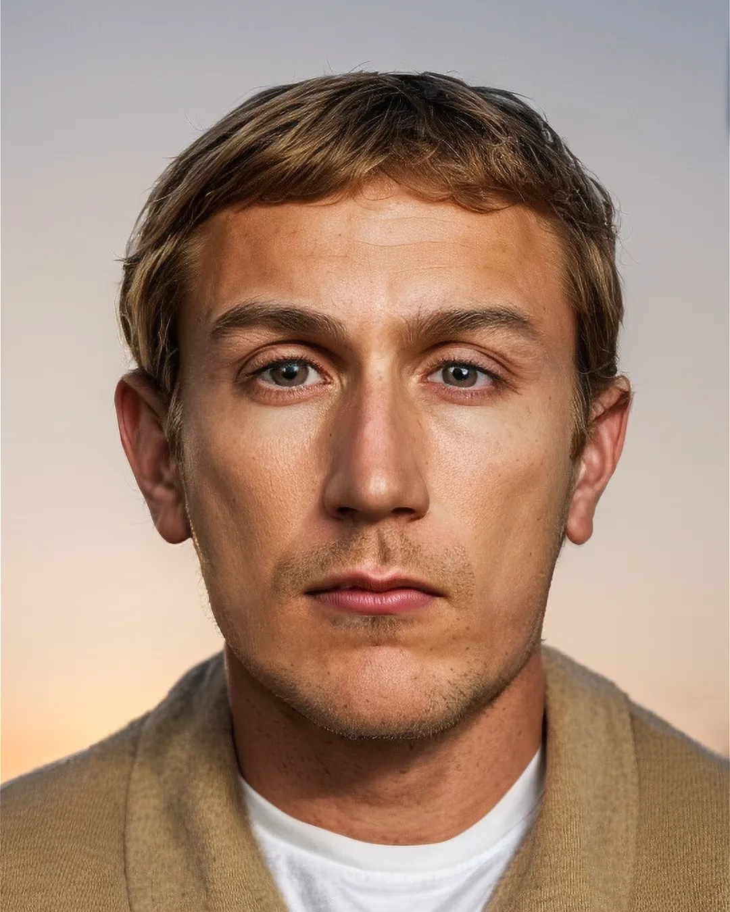

In 1995, 6-year-old Morgan Nick was watching a Little League game near Alma, Arkansas, when she suddenly disappeared. A suspicious man was observed at the scene, which led to multiple composite sketches.
This supposed police composite sketch depicts a creepy hooded figure. The source of the sketch is unknown, but since its emergence in 2010, the image has become a meme, often accompanied by scary stories.
Charles-Henri Sanson was a famous French executioner during the French Revolution, responsible for nearly 3000 beheadings, including the one of Louis XVI and Marie Antoinette. After his death, Eugène Lampsonius drew a portrait of him.
In 1969, the Zodiac Killer donned a black ceremonial hood with a symbol stitched on it and stabbed two college students at Lake Berryessa. One of the victims died, while the other lived to tell the story.


In 2016 in Pennsylvania, a man entered a gas station and held up an employee at knife-point.
In 2018, in Lancaster UK, a man impersonated a market vendor to steal money from unsuspecting customers.
The Doodler was an unidentified serial killer active in San Francisco during the 1970s. He targeted and murdered several gay men, often sketching their portraits before and after the killings.
Joseph James DeAngelo, also known as the Golden State Killer, committed a series of rapes and murders in California in the 70s and 80s and was only recently arrested and convicted in 2018.
 

The I-70 Killer is an unidentified man responsible for a series of murders along the Interstate 70 highway in the Midwest during the early 1990s, targeting mainly female victims.
D.B. Cooper is the unidentified individual who hijacked a commercial aircraft in 1971, extorted a ransom of $200,000, and parachuted into the night, never to be definitively located or identified.
During the investigation into the disappearance of Maddie McCann, multiple composite sketches were made, including this one of a suspicious man that was observed right before her disappearance.
In 1988, in Albuquerque, two sisters, Spring and April Miller, went for a walk, when a man intentionally ran them over with his truck. Spring suffered fatal injuries.
In Winnipeg on April 19, a woman in her 40s entered her car in a parking lot, when an unknown man entered the passenger side and began assaulting her. The suspect managed to flee after the assault.
John Doe #2 was initially described as a possible accomplice to Timothy McVeigh in the Oklahoma City bombing that occurred in 1995.
The Unabomber, also known as Theodore Kaczynski, was an American domestic terrorist who conducted a 17-year bombing campaign from 1978 to 1995, resulting in 23 injuries and 3 deaths.
On 31 May 2009, the body of a young woman was found in the Albert Canal in Visé, Belgium. She was violently killed and her body was weighed down.

On 7 June 2005, the body of a woman was found near Jambes, a borough of Namur, Belgium. A composite sketch was made in hopes to identify the woman.
The Zodiac Killer is notorious for committing at least 5 brutal murders and taunting the media and police with cryptic messages.
Kay Wenal, a former Playboy model, was found brutally murdered inside her home on May 1, 2008. Neighbors told police they saw a strange man near her house on the day of the murder and the day before.
"The Giant" was a key member of the Nijvel Gang, a Belgian criminal group responsible for a series of violent robberies and murders in the 1980s. His true identity remains a mystery.
In 2017 in Boulder, Colorado, a man grabbed, groped and kissed a 13 year old girl near Manhattan Middle School.
In 2019, a man sexually assaulted a woman who's car had broken down near an intersection in Monroe County, USA. The suspect managed to get away.
In 1960, four teenagers were stabbed to death while camping near Lake Bodom in Finland. The killer has never been identified.
A man dubbed Mr Cruel was a serial rapist and murderer who operated in Melbourne, Australia during the late 1980s and early 1990s, targeting young girls. He was never caught.
In 2019 a partially charred skeleton of a woman was found in a park in Liège, Belgium. A composite sketch was made in hopes to identify the woman.
In British Columbia Canada, a man breaks into the house of a newlywed couple. When the woman of the house wakes up and confronts the burglar, he stabs her in the leg and flees the scene of the crime.

In 2009, a woman disguised in a mustache and wig shot and killed a 25-year-old woman in a parking lot in Snellville, Georgia.